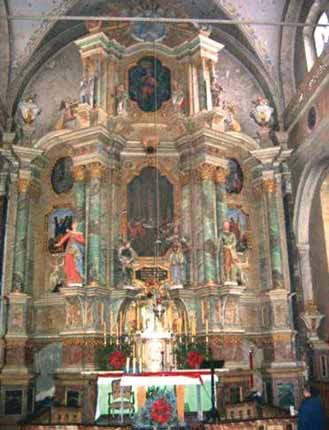
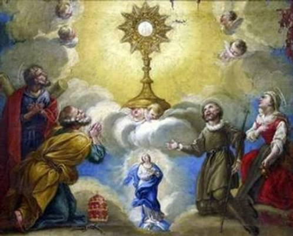

The 1290 Eucharistic Miracle of Głotowo, Poland, occurred when a consecrated Host, buried to protect it from pagan invaders, was miraculously rediscovered after oxen knelt before the spot and a blinding light emerged from the soil.
Years after a priest buried a ciborium containing a consecrated Host to hide it from Lithuanian invaders, a farmer was plowing the field. His oxen suddenly stopped and knelt in adoration, while a brilliant light illuminated the field. Digging at the spot, he found the Host perfectly preserved and white as snow.
When local authorities attempted to move the Host to a nearby church in Dobre Miasto, it mysteriously vanished and reappeared at the original site in the field. Recognizing this as a divine mandate, the community constructed a church dedicated to Corpus Christi on that exact spot, which remains a celebrated place of pilgrimage today.